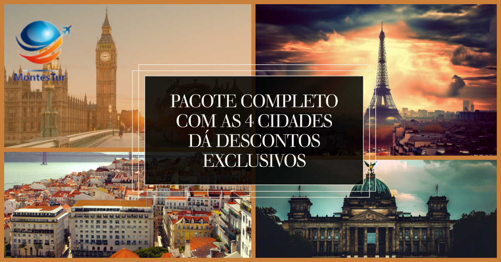

PROMOÇÕES
Prepare-se para uma aventura épica explorando quatro destinos icônicos: Paris, Lisboa, Berlim e Londres. Das charmosas ruas de paralelepípedos de Lisboa à elegância da Torre Eiffel em Paris, cada cidade oferece uma experiência única.
Passeie pela história em Berlim, onde o Muro e a Porta de Brandemburgo contam contos de tempos passados. Em Londres, o Big Ben e a Trafalgar Square são apenas o começo de uma jornada emocionante.
Descubra sabores autênticos, como os pastéis de nata de Lisboa, os queijos franceses de Paris, as salsichas alemãs de Berlim e a cena culinária diversificada de Londres.
Esta é a sua chance de explorar quatro culturas fascinantes, mergulhar em séculos de história e criar memórias inesquecíveis. Reserve já e embarque nessa jornada que o levará através da essência da Europa. ✈️🌆🌟
